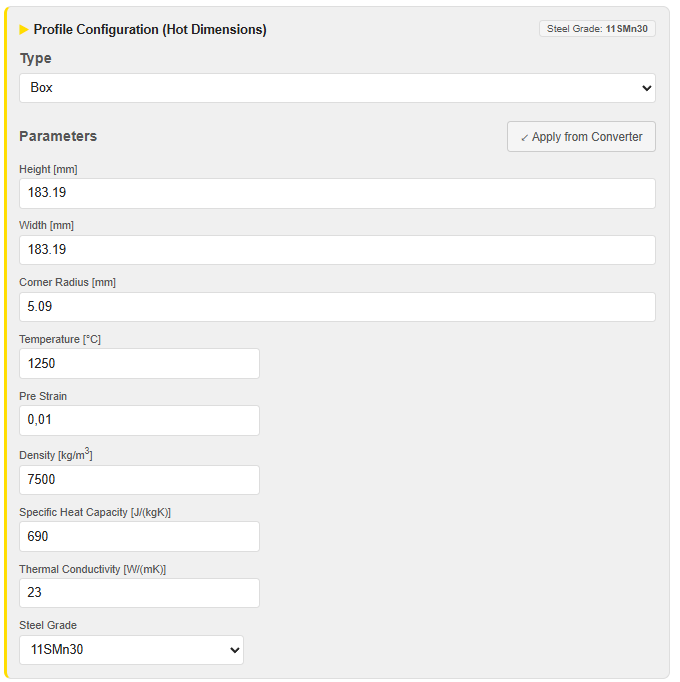
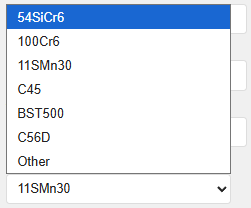
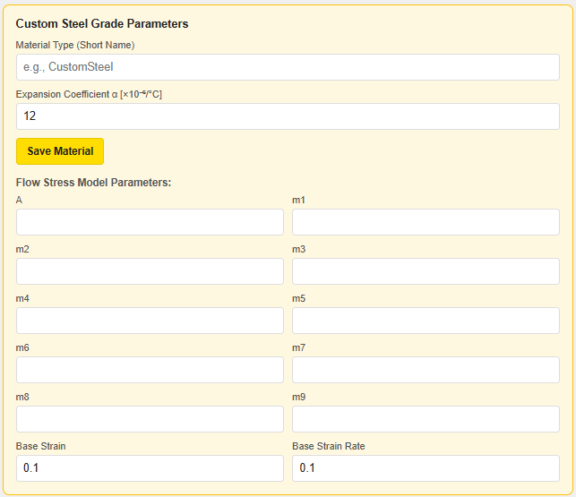
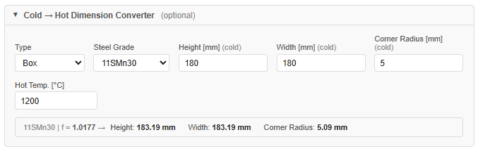
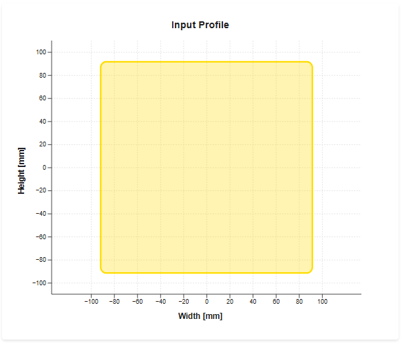
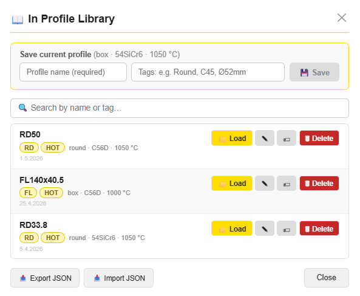
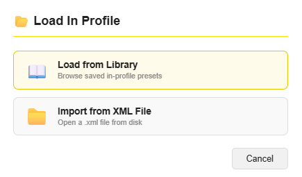
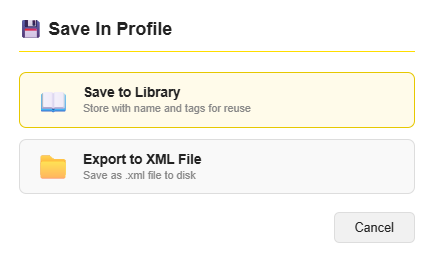

PyRoll GUI | Date: June 2026
The In Profile tab defines the initial workpiece that enters the rolling schedule. It specifies the cross-section geometry, temperature, material properties, and all physical state variables required by the PyRolL solver.
The profile configuration is saved as part of the project file (Ctrl+S).
Profiles can also be stored independently in the In Profile Library
for reuse across different projects.
Select the cross-section shape from the Type drop-down at the top of the Profile Configuration card. The available types are:
| Type | Description | Defining Parameters |
|---|---|---|
| Round | Circular cross-section (rod, bar) | Diameter |
| Square | Square billet with optional corner rounding | Side length, Corner Radius |
| Box | Rectangular billet with optional corner rounding | Height, Width, Corner Radius |
| Hexagon | Regular hexagonal cross-section | Width Across Flats (SW), Corner Radius |
Changing the type resets the dimension fields to their defaults but retains the material and thermal parameters.
All dimensions in the Profile Configuration card are hot dimensions — the actual size of the workpiece at rolling temperature. Use the Cold → Hot Converter to derive them from cold (room-temperature) measurements.

| Parameter | Unit | Description |
|---|---|---|
| Height | mm | Cross-section height at rolling temperature (Box, Square) |
| Width | mm | Cross-section width at rolling temperature (Box) |
| Diameter | mm | Diameter at rolling temperature (Round) |
| SW (Width Across Flats) | mm | Inscribed circle diameter (Hexagon) |
| Corner Radius | mm | Rounding radius at billet corners; use 0 for sharp corners |
| Temperature | °C | Initial workpiece temperature at the entry of the first pass |
| Pre Strain | — | Accumulated equivalent plastic strain before the first pass (e.g. from prior rolling or forging); use 0.01 as default |
| Density | kg/m³ | Material density; auto-filled when a Steel Grade is selected |
| Specific Heat Capacity | J/(kg·K) | Auto-filled from Steel Grade selection |
| Thermal Conductivity | W/(m·K) | Auto-filled from Steel Grade selection |
| Steel Grade | — | Selects the material preset; see Section 4 |
The ✓ Apply from Converter button appears when the
Cold → Hot Converter has computed values. Clicking it copies the
converted hot dimensions into the Height / Width / Corner Radius fields.
The Steel Grade selector loads a complete material preset — thermal properties, density, default temperature, and a flow stress model — with a single click.

The following steel grades are included by default. All flow stress values follow the Hensel–Spittel model:
where \(T\) = temperature [°C], \(\varphi\) = true strain, \(\dot\varphi\) = strain rate [s⁻¹], \(A, m_1\ldots m_9\) = material constants.
| Steel Grade | Default Temp. [°C] | Density [kg/m³] | cp [J/(kg·K)] | λ [W/(m·K)] |
|---|---|---|---|---|
| 54SiCr6 | 1050 | 7700 | 490 | 47 |
| 100Cr6 | 1150 | 7371.9 | 695 | 28.25 |
| 11SMn30 | 1250 | 7500 | 690 | 23 |
| C45 | 1150 | 7850 | 645 | 23 |
| BST500 | 1250 | 7500 | 690 | 23 |
| C56D | 1250 | 7400 | 690 | 27 |
Selecting a grade also loads the corresponding Hensel–Spittel coefficients (A, m1–m9, Base Strain, Base Strain Rate) which the solver uses to compute the flow stress at each pass.
For the six built-in steel grades the Cold → Hot Converter uses tabulated expansion factors derived from material characterisation data. The factors are interpolated linearly between the tabulated temperatures:
| Steel Grade | 800 °C | 900 °C | 1000 °C | 1100 °C | 1200 °C |
|---|---|---|---|---|---|
| 54SiCr6 | 1.0109 | 1.0126 | 1.0143 | 1.0162 | 1.0182 |
| 100Cr6 | 1.0113 | 1.0131 | 1.0150 | 1.0170 | 1.0190 |
| 11SMn30 | 1.0106 | 1.0122 | 1.0139 | 1.0158 | 1.0177 |
| C45 | 1.0108 | 1.0125 | 1.0143 | 1.0162 | 1.0182 |
| BST500 | 1.0105 | 1.0122 | 1.0140 | 1.0159 | 1.0178 |
| C56D | 1.0115 | 1.0134 | 1.0153 | 1.0173 | 1.0194 |
For custom materials or the Other grade a linear approximation is used:
\(\alpha\) = thermal expansion coefficient [×10−6/K] | \(T_\text{ref}\) = 20 °C | Default: \(\alpha = 12 \times 10^{-6}\,\text{K}^{-1}\)
Select Other in the Steel Grade drop-down to enter a custom material. The Custom Steel Grade Parameters panel expands below the profile card.

| Field | Description |
|---|---|
| Material Type (Short Name) | Identifier used in the project file and results (e.g. CustomSteel) |
| Expansion Coefficient α [×10⁻⁶/°C] | Used in the Cold → Hot Converter for this material. Default: 12 |
| A | Hensel–Spittel coefficient A (pre-factor) [Pa] |
| m1 … m9 | Hensel–Spittel exponents; leave blank if not relevant for the grade |
| Base Strain | Reference strain φ₀ for normalisation. Default: 0.1 |
| Base Strain Rate | Reference strain rate φ̇₀ [s⁻¹]. Default: 0.1 |
Click Save Material to store the custom grade in the local browser storage.
It will appear in the Steel Grade selector for future sessions.
The Cold → Hot Dimension Converter is a collapsible utility panel (click the header to expand). It converts room-temperature (cold) dimensions to hot dimensions at the specified rolling temperature, applying the thermal expansion factor for the selected steel grade.

| Input Field | Description |
|---|---|
| Type | Profile shape (independent of the main profile type selector) |
| Steel Grade | Material for expansion factor look-up; defaults to the currently selected grade |
| Height / Width / Corner Radius (cold) | Measured cold dimensions [mm] |
| Hot Temp. [°C] | Target rolling temperature; determines the expansion factor |
The result line below the inputs shows the expansion factor and the computed hot dimensions:
11SMn30 | f = 1.0177 → Height: 183.19 mm Width: 183.19 mm Corner Radius: 5.09 mm
Click ✓ Apply from Converter in the Profile Parameters card to transfer
these values into the Height / Width / Corner Radius fields.
The Input Profile plot on the right side of the tab shows the cross-section of the workpiece in real time. The plot updates whenever a dimension, corner radius, or type changes.

The fill colour of the profile reflects the current temperature:
The colour changes continuously as you adjust the Temperature field, giving an immediate visual impression of the thermal state. The corner radius is also reflected in the plot — sharp corners at radius = 0, fully rounded transitions at larger values.
The In Profile Library stores named profile presets for quick reuse. Open it via the 📖 Library button at the top of the In Profile tab.

Round, C45, Ø52mm).💾 Save. The profile is added to the list immediately.Load on the desired entry — the profile parameters are applied immediately.| Button | Action |
|---|---|
✏ (pencil) | Rename the entry or edit its tags |
⬆ (arrow) | Overwrite the entry with the current profile state |
🗑 Delete | Permanently remove the entry from the library |
Each entry shows its profile shape, steel grade, temperature, and the date it was saved. Tags are displayed as coloured badges for quick identification.
The 📂 Load and 💾 Save buttons at the top of the In Profile
tab let you exchange profile data independently of the full project file.
Clicking either button opens a choice dialog:
| Action | Options |
|---|---|
📂 Load In Profile |

|
💾 Save In Profile |

|
Ctrl+S / Ctrl+O) always includes the complete
in-profile together with all sequences. Use Load / Save In Profile only when you
want to exchange the workpiece definition independently of the pass schedule.
Michael Molter | PyRoll GUI – In Profile Guide